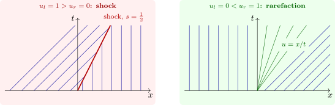

2.3 The Riemann problem and the entropy condition
The Riemann problem has piecewise constant data, \(u_0 = u_l\) for \(x < 0\) and \(u_r\) for \(x > 0\). For Burgers’ equation there are two cases.
- (i)
- If \(u_l > u_r\), the characteristics from the left are faster and run into those from the right, and the solution is a shock moving at the Rankine–Hugoniot speed \(s = \frac 12(u_l + u_r)\): \(u = u_l\) for \(x < st\), \(u = u_r\) for \(x > st\).
- (ii)
- If \(u_l < u_r\), the characteristics diverge, leaving a wedge \(u_lt < x < u_rt\) that no characteristic from \(t = 0\) reaches. The solution there is the rarefaction fan \(u = x/t\), the only self-similar continuous solution, which joins \(u_l\) to \(u_r\) (Figure 3).
In case (ii) the discontinuous function \(u = u_l\) for \(x < st\), \(u = u_r\) for \(x > st\), with \(s = \frac 12(u_l + u_r)\), is also a weak solution: weak solutions are not unique. The non-physical one has characteristics coming out of the shock, which would create information from nothing. The Lax entropy condition rules it out: \[ a(u_l) > s > a(u_r), \] that is, characteristics must run into a shock from both sides. With this condition, and more generally with Kružkov’s entropy inequalities, the Cauchy problem for a scalar conservation law has a unique weak solution. The entropy solution is also the limit as \(\nu \to 0\) of the viscous Burgers equation \(u_t + uu_x = \nu u_{xx}\), whose shock is a smooth transition of width of order \(\nu \): the physically correct solution is the one that small diffusion selects.

Questions on this section
Stuck on something here? Ask below and it stays attached to this topic.